main thing
Branding, Logo, Competitive Market Research, App Design Consultancy, Deck Consultancy, Web Design · 2025
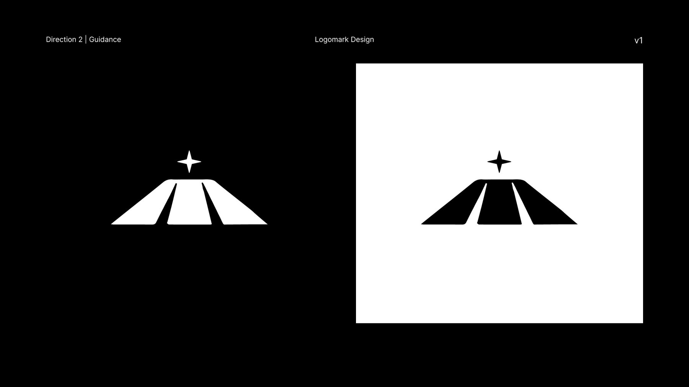
Main Thing is a content planning and personal brand management app for creators. I came on as an early design collaborator to define the brand: logo, color, and visual direction, grounded in a competitive audit of the creator tooling space. I also tested the app as it was built and gave structured feedback on the screens, designed a simple one page site, and contributed design work to the pitch deck.
Context
Main Thing is an app for creators, social media managers, and personal and product brands. It helps people plan content and manage a brand deliberately. I came on as an early design collaborator while the product was being built and the founder was raising and talking to influencers.
What I Did
Brand definition
Before designing anything I ran brand audits across the creator tooling space, and separately looked at the brands the founder already admired, asking what she liked about each one and why. I wanted to see how the two sets compared. The creator tools all looked like each other. The brands she admired weren't software at all, they were beauty and lifestyle labels, and what they had in common was restraint: not everything is for everyone. That gap was the opening. Main Thing could be the serious one, for people who treat their content as work rather than a hobby. Then the job was turning that concept into something you could actually see.
The logo
"Main thing" is a vague name, and it was the founder's. Her rationale was that the app would let creators turn content creation from a side project into their main thing, their actual job. I took it further: this "thing" is your own goal, the thing you're working toward, and the app exists to point you at it. That became one of three directions I explored. I tested a set of marks, and the one we landed on is a mountain rising toward a guiding star. The user's north star, and the climb toward it. It works because it says what the product is for without describing what the product does, and it survives being shrunk to an app icon.
Product feedback
As screens were built I went through and annotated them: home, profile, income, the content calendar hub, and the insights tab. Notes on wording, on what a metric was actually communicating, and on what was missing. Some of it was copy. Some was structural, like flagging where a screen showed a number without showing why it mattered, or where the app told a user what they did without telling them what they did well. Where it was faster to show than to describe, I mocked up the alternative.
Site and deck
A simple one page site, designed in two versions to test the ask: one closing on social media links, one closing on an apply for membership call to action. Both in desktop and mobile, plus terms of service and privacy pages. For fundraising, I built the deck's product imagery: layout design and device mockups showing the app in context, along with a short do and don't guide so the visuals stayed consistent as the deck changed.
What I Learned
When I give feedback on someone else's build, I tend to want to include what I'd just do differently. Early on that can be helpful, but often the objective is simpler: is this broken, is this fixed.
In the End
The app hasn't launched publicly yet. I handed off the brand, icon, site, and deck work and stepped back from the project after that.
Artifacts
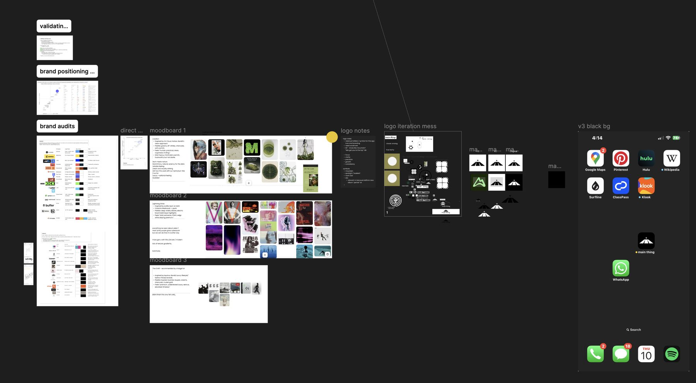
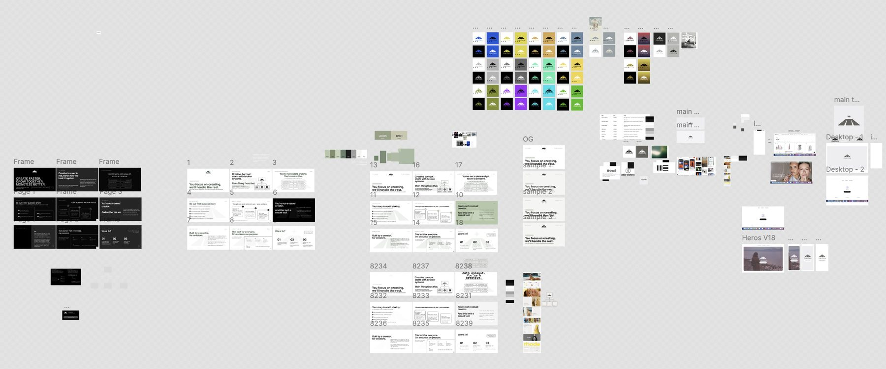
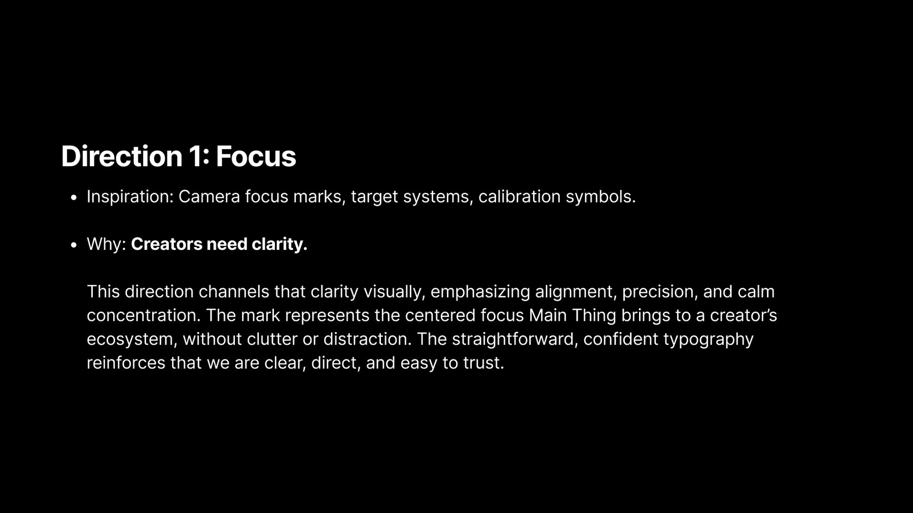
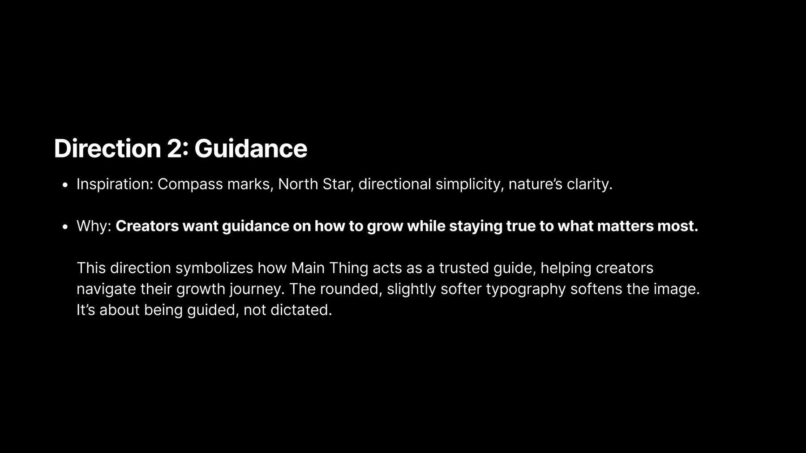
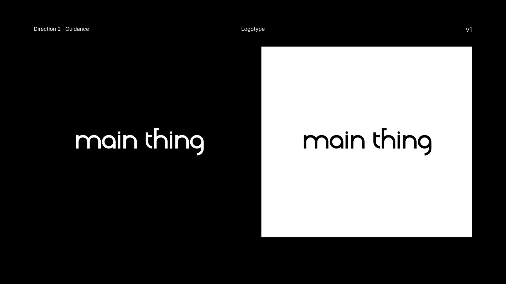
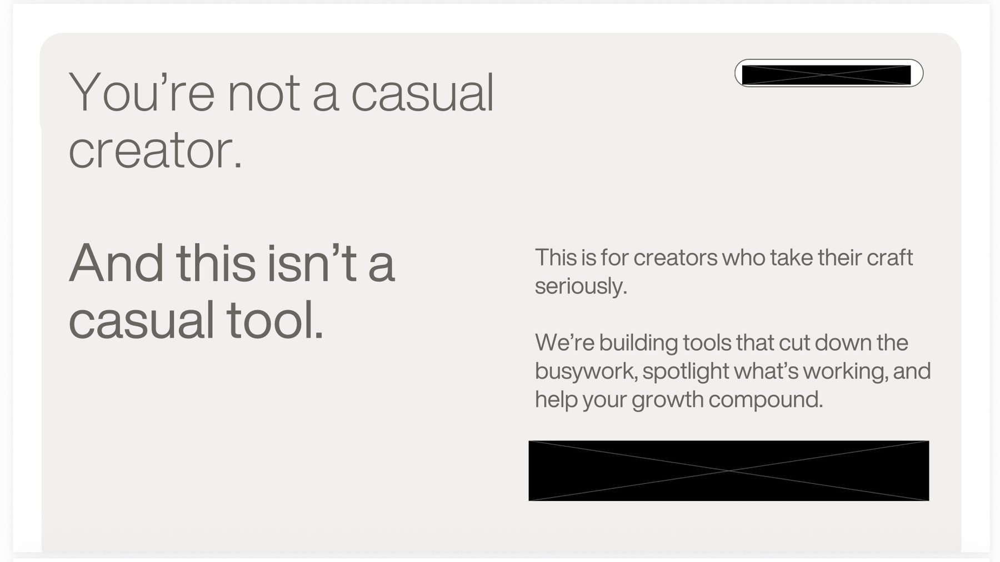
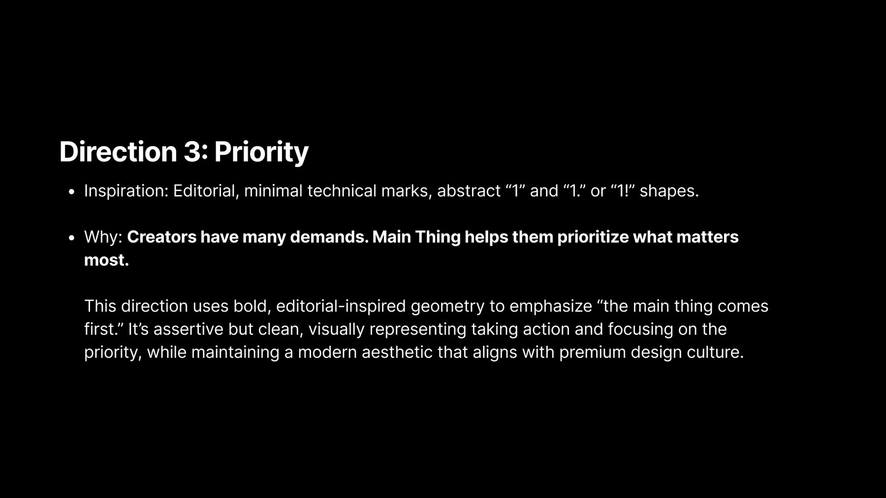
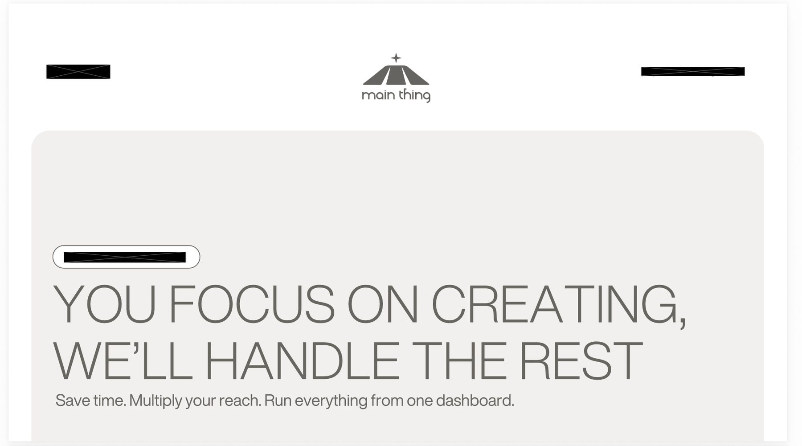
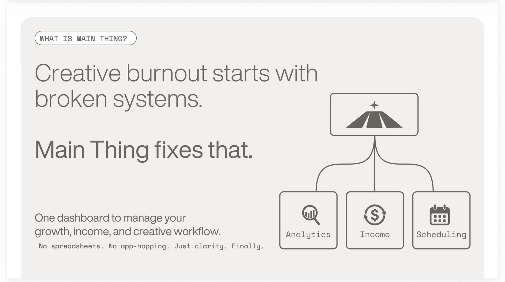
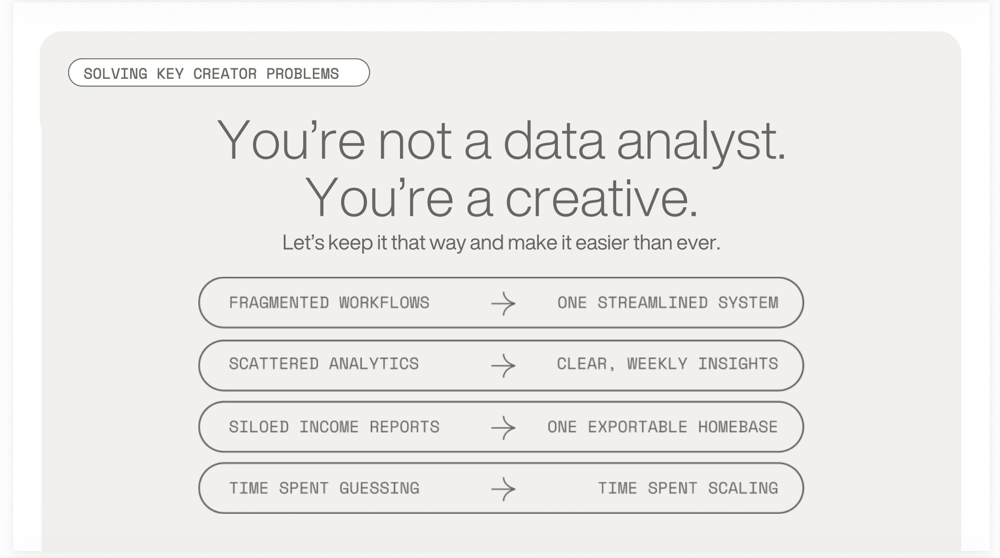
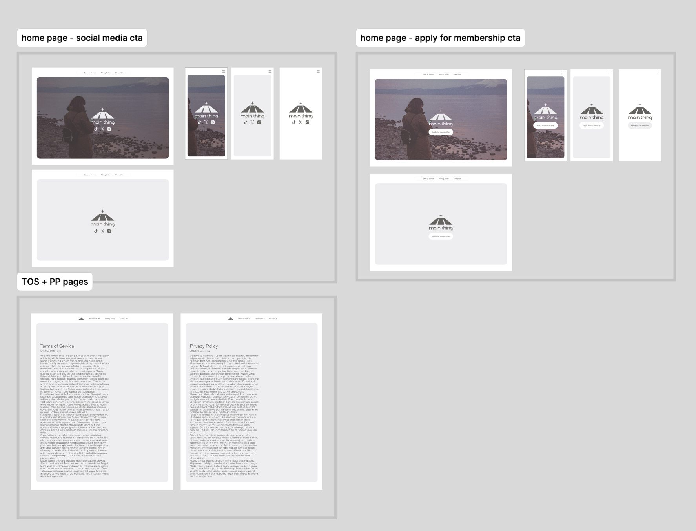